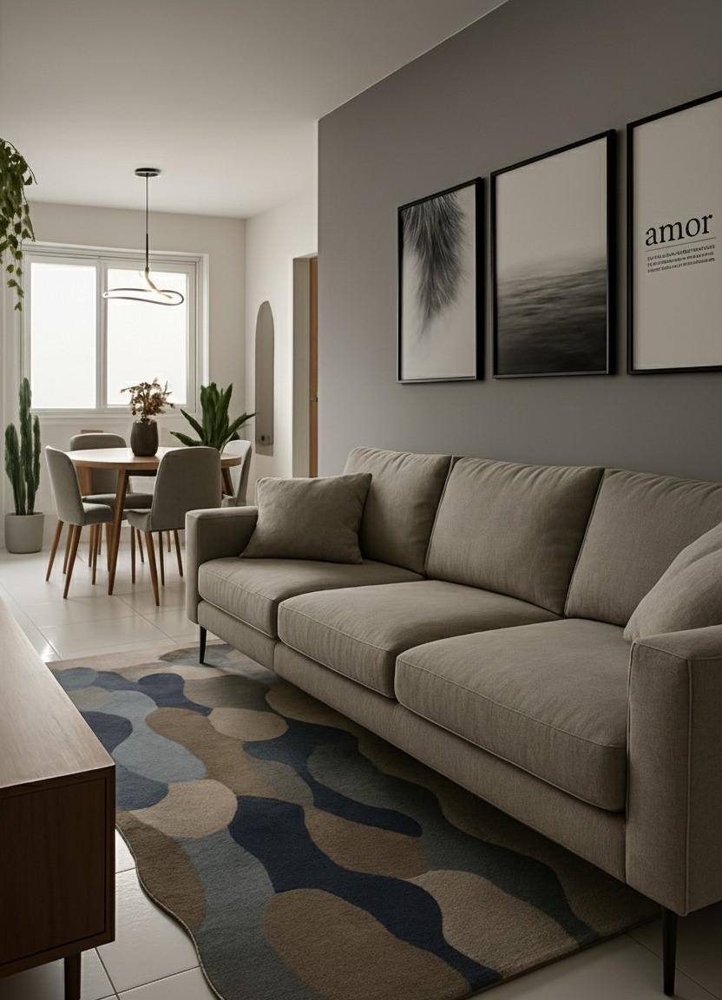

Consultório de Psicologia
Sala comercial projetada para atendimento infantil e adulto, com ambientes integrados e abordagem acolhedora.

Apartamento Residencial
Projeto de apartamento contemporâneo com ênfase na integração espacial, iluminação natural e soluções funcionais para o cotidiano.

Igreja Templo do Deus Vivo
Projeto arquitetônico de templo religioso com foco na organização dos espaços de culto, conforto dos usuários e valorização da experiência coletiva.